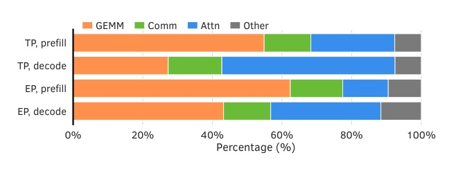
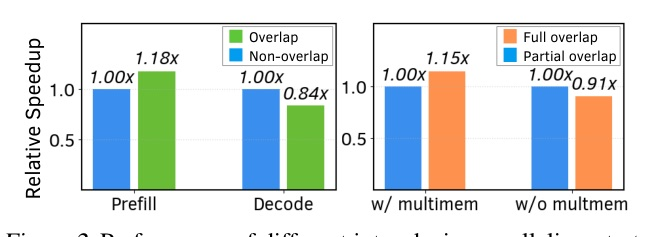
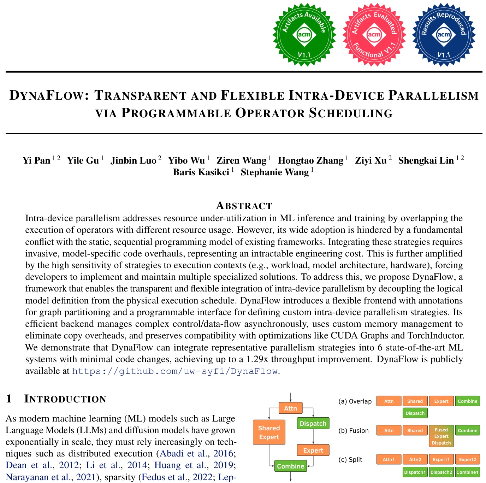
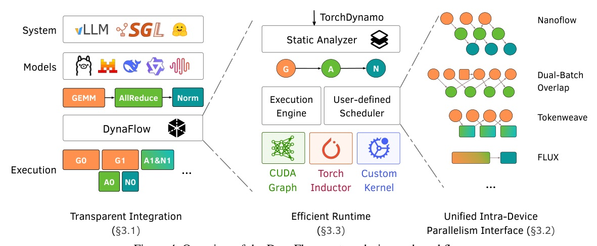
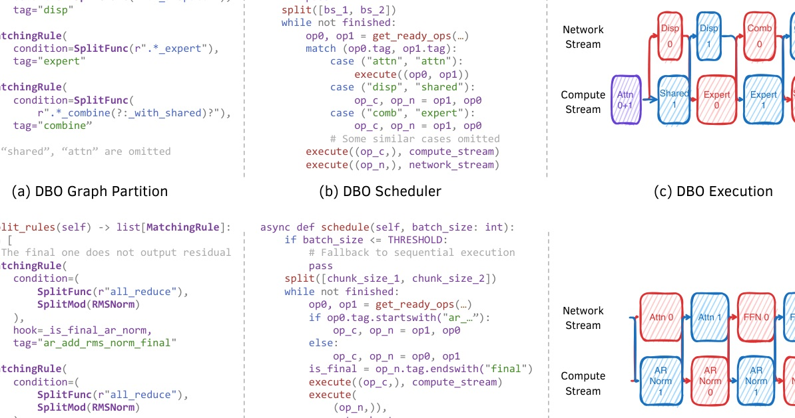
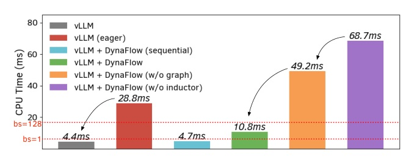
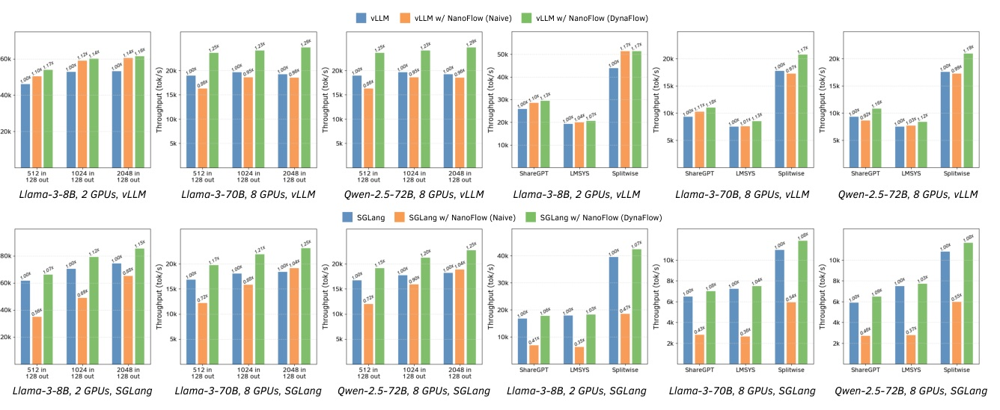
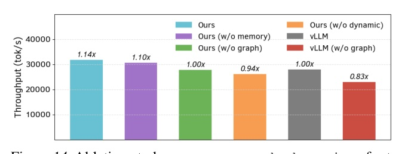

Venue: Proceedings of the 9th MLSys Conference, Bellevue, 2026（PDF p.1 頁尾）· arXiv 2605.21603 · 回溯原因：今日 arXiv 清單無乾淨的計算加速頂會 accepted 論文 · Reviewer 資料：未抓取
把「模型怎麼寫」和「算子怎麼排程」拆開：用 torch.compile backend 讓 overlap / fusion / split 三類 intra-device 平行化，只改數十行就接進 vLLM、SGLang 等 6 個系統，吞吐最高 1.29×。



| 策略 | 做法 | 痛點 |
|---|---|---|
| Overlap | CUDA streams / green contexts | stream 有資源競爭；green context 需手調 SM 數；峰值記憶體上升 |
| Fusion | 以專家寫的 custom kernel 取代多個算子 | 算子子序列組合爆炸，難維護 |
| Split | 沿 batch 維度切 micro-batch | 每多一份 micro-batch 多讀一次權重；何時切、切多細要決定；split/merge 的拷貝 |
靜態編譯器（如 XLA）假設穩定的執行圖，難處理這種動態性（§2.2）。

設計取捨：直接暴露所有子圖會讓使用者自管資料流；宣告式改寫規則又不夠動態。

| 項目 | 程式碼量（LoC） |
|---|---|
| vLLM（GPUModelRunner 處理 micro-batch 的 attention metadata） | 75 |
| MoE 模型額外標註（平均每個模型） | 約 8 |
| 其他系統（多為 torch.compile 支援所需） | < 100 |
| 每個策略：partition 規則（平均） | 11 |
| 每個策略：排程邏輯（平均） | 31 |
SGLang 因 backend 設計與 torch.compile 僅部分支援（v0.5.3.post3）而稍複雜。


| 負載 | 每次迭代平均 token | 使用 batch splitting 的迭代比例 |
|---|---|---|
| 合成（512 in / 128 out） | 8,985 | 91.71% |
| ShareGPT（246 in / 322 out） | 2,991 | 46.21% |
| 策略 / 系統 | 結果（最高） | 備註 |
|---|---|---|
| DBO · vLLM · DeepSeek-V2-Lite | 1.14× | 最高比 vLLM 原生 DBO 好 1.1×；Splitwise 1.16× |
| 通訊重疊 · HF / Megatron / xDiT / FastVideo | 1.15× | Megatron 反向的融合 TP 算子無法被捕捉；Wan-14B 長影片受 attention 主導 |
| TokenWeave · vLLM / HF | 1.21× / 1.22× | 依 batch size 選 CTA 數，比原版 TokenWeave 最高再好 12% |
| Comet · Megatron-LM | 1.25×（Qwen2-MoE）/ 1.27×（Mixtral） | 與 Comet 團隊自己的 fork 持平 |
| Flux · vLLM | 最高退化 20% | fused kernel 延遲是分開 GEMM + AllReduce 的 1.6× |

| 項目 | DynaFlow | vLLM |
|---|---|---|
| CUDA graph capture 時間 | 4.3 s | 2.4 s |
| CUDA graph 記憶體 | 1.80 GiB | 0.98 GiB |
| 靜態分析 | 0.2 s | — |
對照 vLLM 整體初始化 24 s、不到測試機 GPU 記憶體 0.5%；作者指出可用 Medusa 類技術進一步降低（§5.4）。
此頁為編者的推論，已與論文內容分開標示。
來源：arXiv 2605.21603 · MLSys 2026 · 程式碼 github.com/uw-syfi/DynaFlow